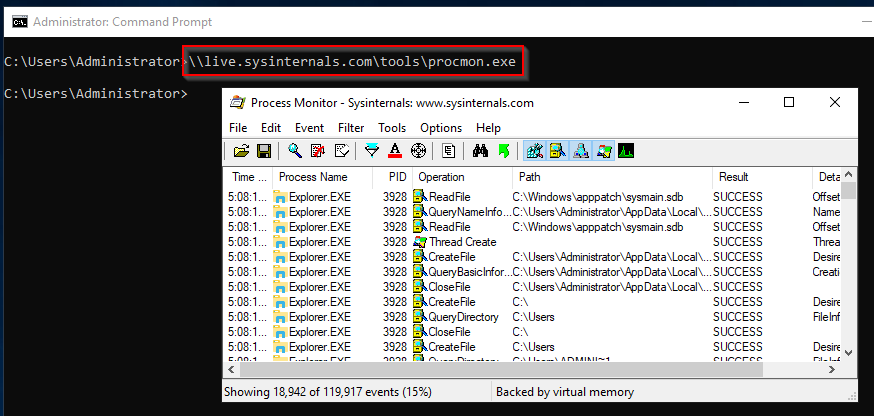
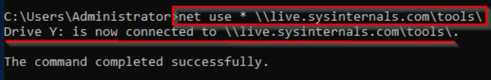
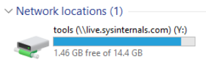
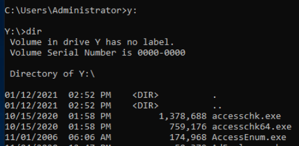
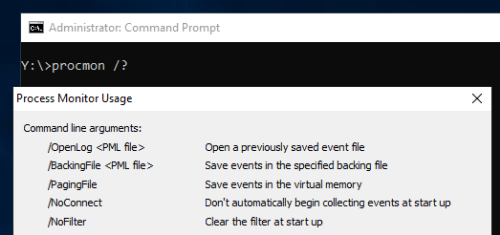

Intro & setup
Sysinternals
The Sysinternals tools is a compilation of over 70+ Windows-based tools. Each of the tools falls into one of the following categories:
•
File and Disk Utilities•
Networking Utilities•
Process Utilities•
Security Utilities•
System Information•
MiscellaneousThe Sysinternals tools and its website (sysinternals.com) were created by Mark Russinovich back in the late '90s, along with an individual named Bryce Cogswell under the company Wininternals Software.
In 2006, Microsoft acquired Wininternals Software, and Mark Russinovich joined Microsoft. Today
he is the CTO of Microsoft Azure. Download LInk:https://docs.microsoft.com/en-us/sysinternals/https://live.sysinternals.com/Powershell Download :-> Download-SysInternalsTools C:\Tools\SysintNote: The Sysinternals tool(s) can be downloaded and run from the
local system, or the tool(s) can be run from the
web.
Running Sysinternals Live From The Internet:
CMD: live.sysinternals.com/<toolname> Or
\\live.sysinternals.com\tools\<toolname>Eg. \\live.sysinternals.com\tools\procmon.exeSetup:Dependencies: A) The
WebDAV client must be installed and running on the machine. The WebDAV protocol is what allows a local machine to access a remote machine running a WebDAV share and perform actions in it.
On a
Windows 10 client, the WebDAV client is
installed but the client is most likely
not running. If you try to run a Sysinternals tool it will fail with a message "The network path was not found."
Check Status: (Using Powershell) Get-Service webclient
Start the Service: (Using Powershell) Start-Service webclient
B)
Network Discovery needs to be enabled as well. This setting can be enabled in the
Network and Sharing Center.
There are a few ways to open the Network and Sharing Center. Here is a neat command line to launch it.
Open Network and Sharing Center (Using Powershell)\
control.exe /name Microsoft.NetworkAndSharingCenter
Then,
Click on
Change advanced sharing settings and
select Turn on network discovery for your current network profile.
Note: On
Windows Server 2019 edition. The WebDAV client is
not installed by default.
The feature to install on Windows Server is
WebDAV Redirector. This feature can be installed via
Server Manager or using
PowerShell.
To install with PowerShell Install-WindowsFeature WebDAV-Redirector –Restart.
Note: The server needs to reboot for the installation to complete.
After reboot, the installation can be verified with the following PowerShell command:
Get-WindowsFeature WebDAV-Redirector | Format-Table –Autosize
Once Installation is complete, we can do the dependencies
A &
B as with Windows 10.
Running Online:Now with all the necessary components installed and enabled the local machine is ready to run Sysinternals tools from the web.
There are 2 ways the tools can be run:
1. Run the tool from the command line (as shown above from the Windows 10 machine)
2. Create a network drive and run the tool from the mapped drive
Method-1: \\live.sysinternals.com\tools\<toolname> 
Method-2: net use * \\live.sysinternals.com\tools\ 
Note: The asterick will auto-assign a drive letter. The asterick can be replaced with an actual drive letter instead.

The website is now browsable within the local machine.

